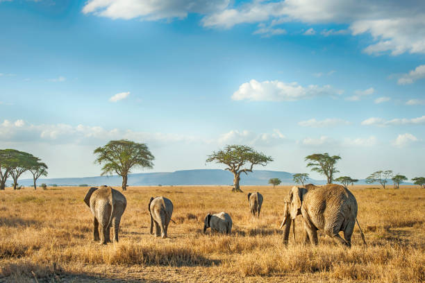
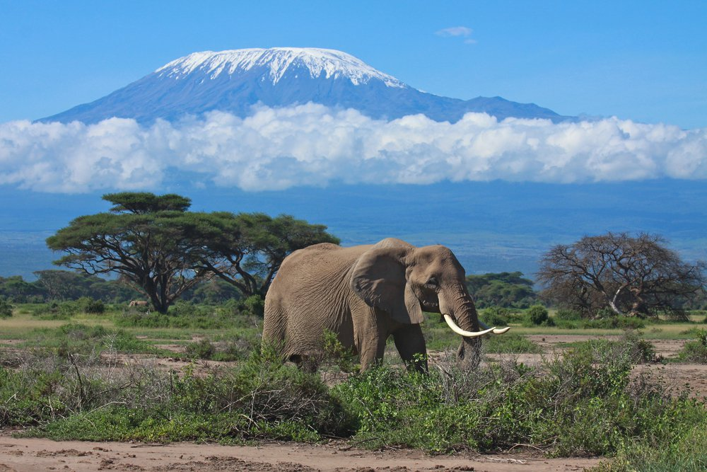

Сафари в Национальном парке Серенгети, Танзания
Национальный парк Серенгети славится своим уникальным африканским опытом сафари. Он предлагает возможность наблюдать величественных львов, грациозных жирафов, могучих слонов и множество других видов животных в их естественной среде обитания, создавая незабываемые впечатления о дикой природе.
Подробнее

Гора Килиманджаро, Танзания
Гора Килиманджаро, одна из самых высоких вершин Африки, притягивает любителей альпинизма и природных красот. Ее заснеженные вершины и уникальный ландшафт создают захватывающие виды, а восхождение на ее вершину предлагает незабываемые приключения и впечатления.
Подробнее